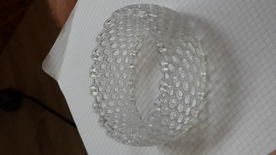

On October 18th our school class went to Impact Hub, which is a free space where people go to develop innovative ideas and identify new market opportunities. As soon as we arrived, we were seated in a room in which we were told about their experiences and then we went to the building placed in front of Impact Hub. Here, two guys showed us their project about the creation of an innovative bicycle almost entirely made of metal, much lighter than an usual bicycle and completely customizable, so that everyone can have fun in creating their own design.
Back to Impact Hub, we started to talk about “Open Source”, a different vision of economy, according to which every resource belongs to everyone and everyone can use it.
L’argomento di cui abbiamo parlato per la maggior parte del tempo è stata la stampante 3D.
The subject we talked about for the most of the time was the 3-D printer. The 3-D printer is a machine that makes use of particular material (which melts at a temperature of about 300°C) that is sprinkled by a code to create the desired object.
For the 3-D printer 2 types of scan exists:
1. laser scan: the lasers point to the object that we want to reproduce and create the image, that is later analyzed by a specific software;
2. infrared scan: infrared rays are shot on the object and, measuring the distance between the rays, the infrared camera is able to recognize the shape of the object.